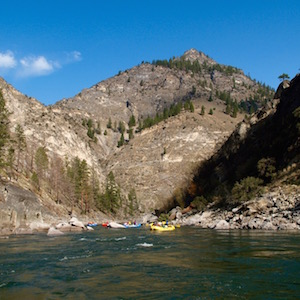

Fun Facts About Waterways
The Congo River in Central Africa ranks as the second-largest river in the world by discharge volume, with an average flow rate of approximately 41,800 cubic meters per second (1,476,000 cubic feet per second). Its basin is home to the world's second-largest rainforest and supports rich biodiversity, including numerous endemic species.


The Power of Nature
Water erosion stands as the primary force behind the reshaping of landforms, earning its distinctive term: "Water Erosion." The Grand Canyon serves as a striking testament to the formidable power of water in sculpting landscapes over time.
The Mississippi River, flowing through the heartland of the United States, is a vital waterway for transportation and commerce. It serves as a major artery for the movement of goods, agricultural products, and energy resources, linking the central U.S. to international markets via the Gulf of Mexico.
